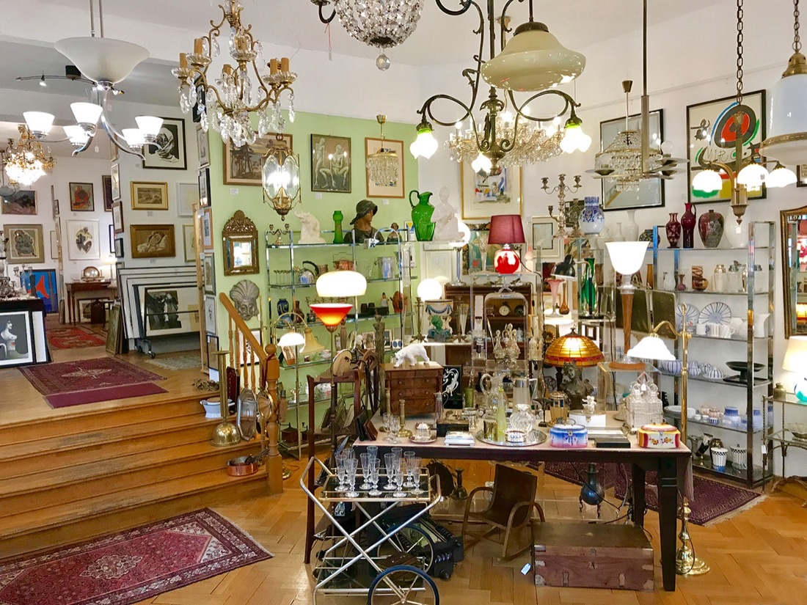

kunst-a-bunt – Galerieladen am Kollwitzplatz
Ambitionierter Eckladen im Prenzlauer Berg: Antiquitäten, Lampen, Bilder, Bücher und Wein vom Rhein. Seit dem Jahr 2000 ein Ort für Ausstellung, Verkauf und Lesung – direkt am Kollwitzplatz.
Bei uns finden Sie „antiken“ Hausrat von handwerklichem und ästhetischem Reiz: Wagenfeld-Glas, Rosenthal-Porzellan, Silberbesteck von WMF und August Wellner sowie eine reiche Auswahl an Deckenleuchten aus Jugendstil und Art déco. Dazu Gemälde, Aquarelle und Grafik der Klassischen Moderne.

Unsere Bereiche


Über 80 Ausstellungen seit 2000
Seit der Jahrtausendwende zeigt kunst-a-bunt thematische Ausstellungen – von „Bildern vom Prenzlauer Berg“ bis zu Werken von Käthe Kollwitz, Lovis Corinth, Kurt Mühlenhaupt und vielen mehr. Zur vollständigen Ausstellungsübersicht →